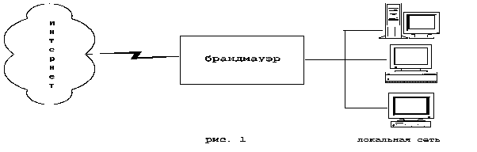
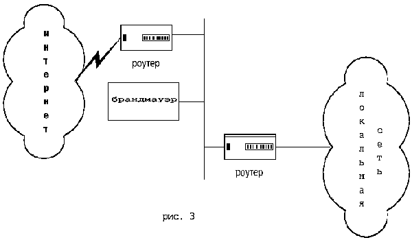
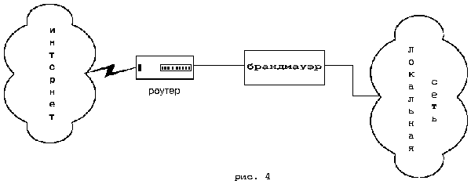
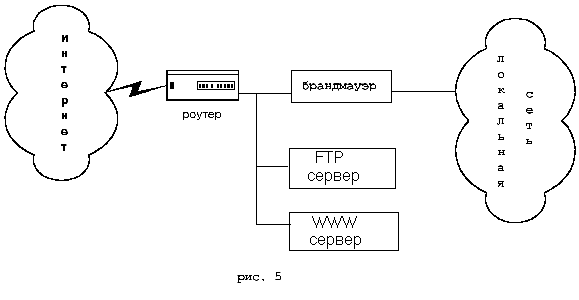
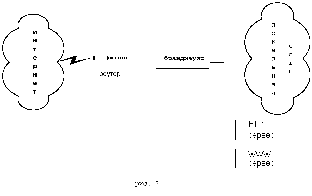

Брандмауэр
Брандмауэр - это система или комбинация систем, позволяющие разделить сеть на две или более частей и реализовать набор правил, определяющих условия прохождения пакетов из одной части в другую (см рис.1). Как правило, эта граница проводится между локальной сетью предприятия и INTERNET, хотя ее можно провести и внутри локальной сети предприятия. Брандмауэр таким образом пропускает через себя весь трафик. Для каждого проходящего пакета брандмауэр принимает решение пропускать его или отбросить. Для того чтобы брандмауэр мог принимать эти решения, ему необходимо определить набор правил. О том, как эти правила описываются и какие параметры используются при их описании речь пойдет ниже.

Как правило, брандмауэры функционируют на какой-либо UNIX платформе - чаще всего это BSDI, SunOS, AIX, IRIX и т.д., реже - DOS, VMS, WNT, Windows NT. Из аппаратных платформ встречаются INTEL, Sun SPARC, RS6000, Alpha , HP PA-RISC, семейство RISC процессоров R4400-R5000. Помимо Ethernet, многие брандмауэры поддерживают FDDI, Token Ring, 100Base-T, 100VG-AnyLan, различные серийные устройства. Требования к оперативной памяти и объему жесткого диска зависят от количества машин в защищаемом сегменте сети, но чаще всего рекомендуется иметь не менее 32Мб ОЗУ и 500 Мб на жестком диске.
Как правило, в операционную систему, под управлением которой работает брандмауэр вносятся изменения, цель которых - повышение защиты самого брандмауэра. Эти изменения затрагивают как ядро ОС, так и соответствующие файлы конфигурации. На самом брандмауэре не разрешается иметь счетов пользователей (а значит и потенциальных дыр), только счет администратора. Некоторые брандмауэры работают только в однопользовательском режиме. Многие брандмауэры имеют систему проверки целостности программных кодов. При этом контрольные суммы программных кодов хранятся в защищенном месте и сравниваются при старте программы во избежание подмены программного обеспечения.
Все брандмауэры можно разделить на три типа:
- пакетные фильтры (packet filter)
- сервера прикладного уровня (application gateways)
- сервера уровня соединения (circuit gateways)
Все типы могут одновременно встретиться в одном брандмауэре.
Пакетные фильтры
Брандмауэры с пакетными фильтрами принимают решение о том, пропускать пакет или отбросить, просматривая IP-адреса, флаги или номера TCP портов в заголовке этого пакета. IP-адрес и номер порта - это информация сетевого и транспортного уровней соответственно, но пакетные фильтры используют и информацию прикладного уровня, т.к. все стандартные сервисы в TCP/IP ассоциируются с определенным номером порта.
Для описания правил прохождения пакетов составляются таблицы типа:
|
Действие |
тип пакета |
адрес источн. |
порт источн. |
адрес назнач. |
порт назнач. |
флаги |
Поле "действие" может принимать значения пропустить или
отбросить.
Тип пакета - TCP, UDP или ICMP.
Флаги - флаги из заголовка
IP-па-кета.
Поля "порт источника" и "порт назначения" имеют смысл только для
TCP и UDP пакетов.
Сервера прикладного уровня
Брандмауэры с серверами прикладного уровня используют сервера конкретных сервисов - TELNET, FTP и т.д. (proxy server), запускаемые на брандмауэре и пропускающие через себя весь трафик, относящийся к данному сервису. Таким образом, между клиентом и сервером образуются два соединения: от клиента до брандмауэра и от брандмауэра до места назначения.
Полный набор поддерживаемых серверов различается для каждого конкретного брандмауэра, однако чаще всего встречаются сервера для следующих сервисов:
- терминалы (Telnet, Rlogin)
- передача файлов (Ftp)
- электронная почта (SMTP, POP3)
- WWW (HTTP)
- Gopher
- Wais
- X Window System (X11)
- Принтер
- Rsh
- Finger
- новости (NNTP) и т.д.
Использование серверов прикладного уровня позволяет решить важную задачу - скрыть от внешних пользователей структуру локальной сети, включая информацию в заголовках почтовых пакетов или службы доменных имен (DNS). Другим положительным качеством является возможность аутентификации на пользовательском уровне (аутентификация - процесс подтверждения идентичности чего-либо; в данном случае это процесс подтверждения, действительно ли пользователь является тем, за кого он себя выдает). Немного подробнее об аутентификации будет сказано ниже.
При описании правил доступа используются такие параметры как название сервиса, имя пользователя, допустимый временной диапазон использования сервиса, компьютеры, с которых можно пользоваться сервисом, схемы аутентификации. Сервера протоколов прикладного уровня позволяют обеспечить наиболее высокий уровень защиты - взаимодействие с внешним миров реализуется через небольшое число прикладных программ, полностью контролирующих весь входящий и выходящий трафик.
Сервера уровня соединения
Сервер уровня соединения представляет из себя транслятор TCP соединения. Пользователь образует соединение с определенным портом на брандмауэре, после чего последний производит соединение с местом назначения по другую сторону от брандмауэра. Во время сеанса этот транслятор копирует байты в обоих направлениях, действуя как провод.
Как правило, пункт назначения задается заранее, в то время как источников может быть много ( соединение типа один - много). Используя различные порты, можно создавать различные конфигурации.
Такой тип сервера позволяет создавать транслятор для любого определенного пользователем сервиса, базирующегося на TCP, осуществлять контроль доступа к этому сервису, сбор статистики по его использованию.
Сравнительные характеристики
Ниже приведены основные преимущества и недостатки пакетных фильтров и серверов прикладного уровня относительно друг друга.
К положительным качествам пакетных фильтров следует отнести следующие:
- относительно невысокая стоимость
- гибкость в определении правил фильтрации
- небольшая задержка при прохождении пакетов
Недостатки у данного типа брандмауэров следующие :
- локальная сеть видна ( маршрутизируется ) из INTERNET
- правила фильтрации пакетов трудны в описании, требуются очень хорошие знания технологий TCP и UDP
- при нарушении работоспособности брандмауэра все компьютеры за ним становятся полностью незащищенными либо недоступными
- аутентификацию с использованием IP-адреса можно обмануть использованием IP-спуфинга (атакующая система выдает себя за другую, используя ее IP-адрес)
- отсутствует аутентификация на пользовательском уровне
К преимуществам серверов прикладного уровня следует отнести следующие:
- локальная сеть невидима из INTERNET
- при нарушении работоспособности брандмауэра пакеты перестают проходить через брандмауэр, тем самым не возникает угрозы для защищаемых им машин
- защита на уровне приложений позволяет осуществлять большое количество дополнительных проверок, снижая тем самым вероятность взлома с использованием дыр в программном обеспечении
- аутентификация на пользовательском уровне может быть реализована система немедленного предупреждения о попытке взлома.
Недостатками этого типа являются:
- более высокая, чем для пакетных фильтров стоимость;
- невозможность использовании протоколов RPC и UDP;
- производительность ниже, чем для пакетных фильтров.
Виртуальные сети
Ряд брандмауэров позволяет также организовывать виртуальные корпоративные сети ( Virtual Private Network), т.е. объединить несколько локальных сетей, включенных в INTERNET в одну виртуальную сеть. VPN позволяют организовать прозрачное для пользователей соединение локальных сетей, сохраняя секретность и целостность передаваемой информации с помощью шифрования. При этом при передаче по INTERNET шифруются не только данные пользователя, но и сетевая информация - сетевые адреса, номера портов и т.д.
Схемы подключения
Для подключения брандмауэров используются различные схемы. Брандмауэр может использоваться в качестве внешнего роутера, используя поддерживаемые типы устройств для подключения к внешней сети (см рис. 1). Иногда используется схема, изображенная на рис 3, однако пользоваться ей следует только в крайнем случае, поскольку требуется очень аккуратная настройка роутеров и небольшие ошибки могут образовать серьезные дыры в защите.

Если брандмауэр может поддерживать два Ethernet интерфейса (так называемый dual-homed брандмауэр), то чаще всего подключение осуществляется через внешний маршрутизатор (см рис. 4).

При этом между внешним роутером и брандмауэром имеется только один путь, по которому идет весь трафик. Обычно роутер настраивается таким образом, что брандмауэр является единственной видимой снаружи машиной. Эта схема является наиболее предпочтительной с точки зрения безопасности и надежности защиты.
Другая схема представлена на рис. 5.

При этом брандмауэром защищается только одна подсеть из нескольких выходящих из роутера. В незащищаемой брандмауэром области часто располагают серверы, которые должны быть видимы снаружи (WWW, FTP и т.д.). Некоторые брандмауэры предлагают разместить эти сервера на нем самом - решение, далеко не лучшее с точки зрения загрузки машины и безопасности самого брандмауэра
Существуют решения (см рис. 6),которые позволяют организовать для серверов, которые должны быть видимы снаружи, третью сеть; это позволяет обеспечить контроль за доступом к ним, сохраняя в то же время необходимый уровень защиты машин в основной сети.

При этом достаточно много внимания уделяется тому, чтобы пользователи внутренней сети не могли случайно или умышленно открыть дыру в локальную сеть через эти сервера. Для повышения уровня защищенности возможно использовать в одной сети несколько брандмауэров, стоящих друг за другом.
Администрирование
Легкость администрирования является одним из ключевых аспектов в создании эффективной и надежной системы защиты. Ошибки при определении правил доступа могут образовать дыру, через которую может быть взломана система. Поэтому в большинстве брандмауэров реализованы сервисные утилиты, облегчающие ввод, удаление, просмотр набора правил. Наличие этих утилит позволяет также производить проверки на синтаксические или логические ошибки при вводе или редактирования правил. Как правило, эти утилиты позволяют просматривать информацию, сгруппированную по каким либо критериям - например, все что относится к конкретному пользователю или сервису.
Системы сбора статистики и предупреждения об атаке
Еще одним важным компонентом брандмауэра является система сбора статистики и предупреждения об атаке. Информация обо всех событиях - отказах, входящих, выходящих соединениях, числе переданных байт, использовавшихся сервисах, времени соединения и т.д. - накапливается в файлах статистики. Многие брандмауэры позволяют гибко определять подлежащие протоколированию события, описать действия брандмауэра при атаках или попытках несанкционированного доступа - это может быть сообщение на консоль, почтовое послание администратору системы и т.д. Немедленный вывод сообщения о попытке взлома на экран консоли или администратора может помочь, если попытка оказалась успешной и атакующий уже проник в систему. В состав многих брандмауэров входят генераторы отчетов, служащие для обработки статистики. Они позволяют собрать статистику по использованию ресурсов конкретными пользователями, по использованию сервисов, отказам, источникам, с которых проводились попытки несанкционированного доступа и т.д.
Аутентификация
Аутентификация является одним из самых важных компонентов брандмауэров. Прежде чем пользователю будет предоставлено право воспользоваться тем или иным сервисом, необходимо убедиться, что он действительно тот, за кого он себя выдает (предполагается, что этот сервис для данного пользователя разрешен: процесс определения, какие сервисы разрешены называется авторизацией. Авторизация обычно рассматривается в контексте аутентификации - как только пользователь аутентифицирован, для него определяются разрешенные ему сервисы). При получении запроса на использование сервиса от имени какого-либо пользователя, брандмауэр проверяет, какой способ аутентификации определен для данного пользователя и передает управление серверу аутентификации. После получения положительного ответа от сервера аутентификации брандмауэр образует запрашиваемое пользователем соединение.
Как правило, используется принцип, получивший название "что он знает" - т.е. пользователь знает некоторое секретное слово, которое он посылает серверу аутентификации в ответ на его запрос.
Одной из схем аутентификации является использование стандартных UNIX паролей. Эта схема является наиболее уязвимой с точки зрения безопасности - пароль может быть перехвачен и использован другим лицом.
Чаще всего используются схемы с использованием одноразовых паролей. Даже будучи перехваченным, этот пароль будет бесполезен при следующей регистрации, а получить следующий пароль из предыдущего является крайне трудной задачей. Для генерации одноразовых паролей используются как программные, так и аппаратные генераторы - последние представляют из себя устройства, вставляемые в слот компьютера. Знание секретного слова необходимо пользователю для приведения этого устройства в действие. Ряд брандмауэров поддерживают Kerberos - один из наиболее распространенных методов аутентификации. Некоторые схемы требуют изменения клиентского программного обеспечения - шаг, который далеко не всегда приемлем. Как правило, все коммерческие брандмауэры поддерживают несколько различных схем, позволяя администратору сделать выбор наиболее приемлемой для своих условий.